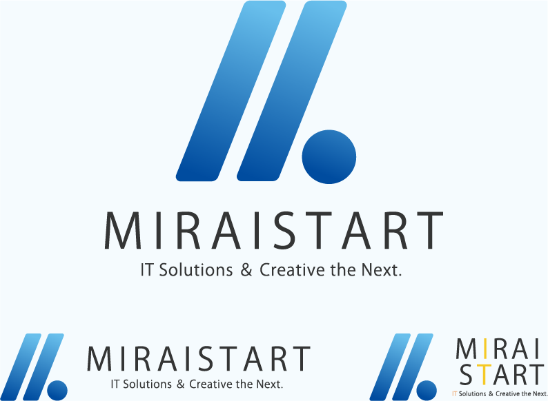

ロゴ
株式会社ミライスタート様

- 概要
- 株式会社ミライスタート様のロゴデザイン
- デザイン
-
この作品は実際に企業ロゴとして採用されました。
HTMLの相対パスである『. . /』をモチーフにしてデザインしました。
1 階層上のや高みを目指すという意味が込められています。 またリンクの役割を果たすので『他者や世界との繋がり』を表しています。 今回はドットとスラッシュのかずと位置を逆転させました。 本来あるパスと形を変えることで、『型にハマらず変化を恐れない』という意味を強めるためです。
このロゴのスラッシュは地球の地軸の角度と同じ角度 ( 約 23.4 度 ) で傾いています。 地軸と同じ傾きにすることで『世界との繋がり』を強調しました。 さらに、スラッシュが右肩上がりになることによって先進性、成長、未来といったワード を連想させます。
- 作業工程
- 要件定義 デザイン設計 デザイン
- 制作期間
- 1ヶ月
- 使用ツール
- Illustrator